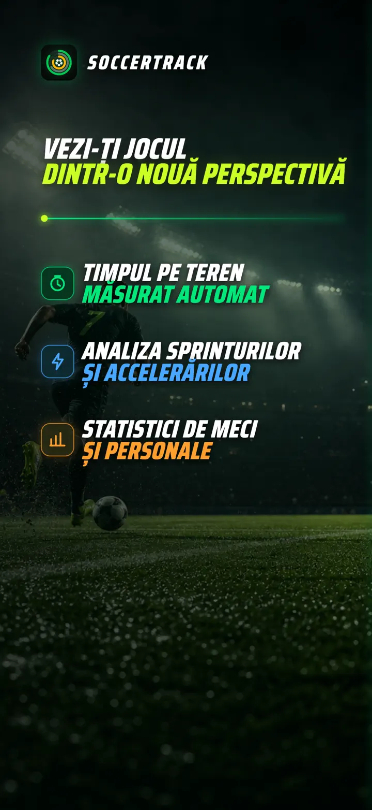
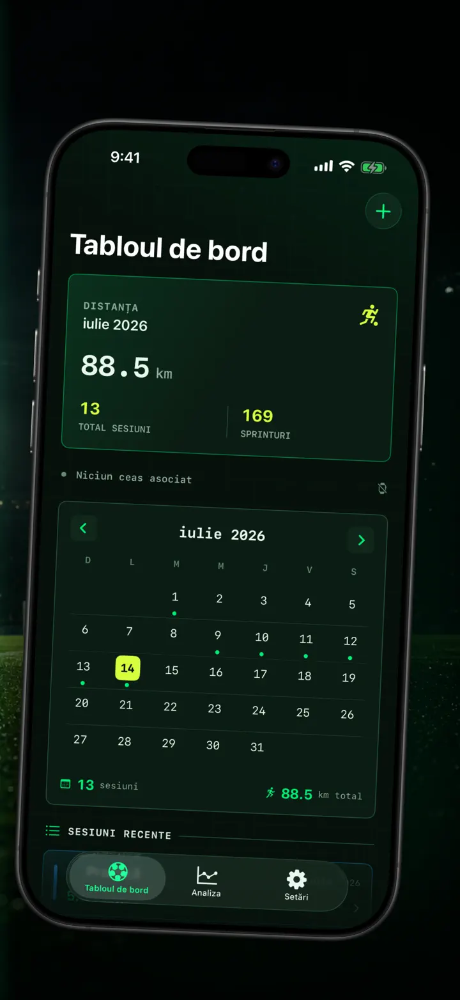
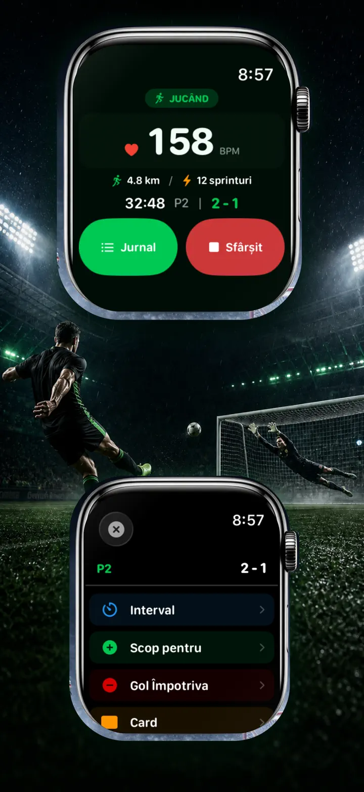
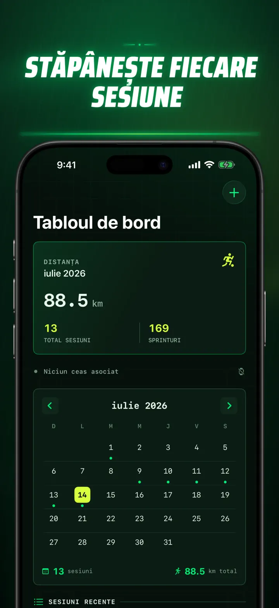
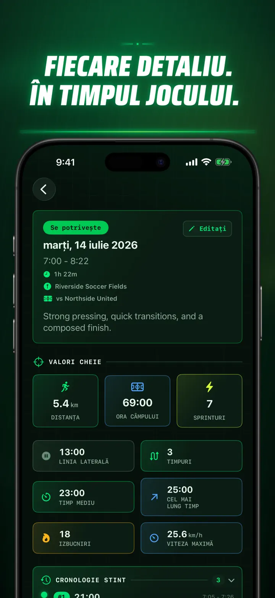
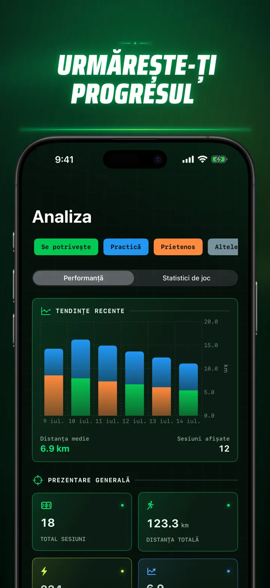
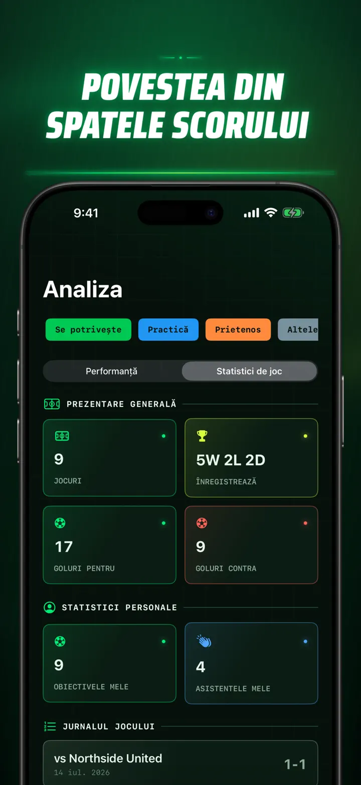
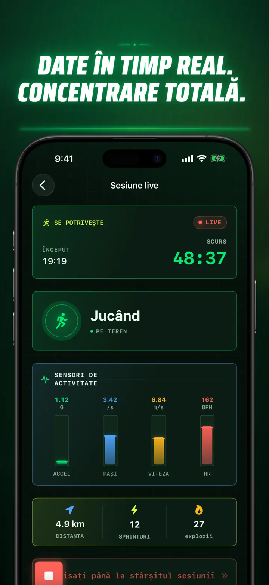
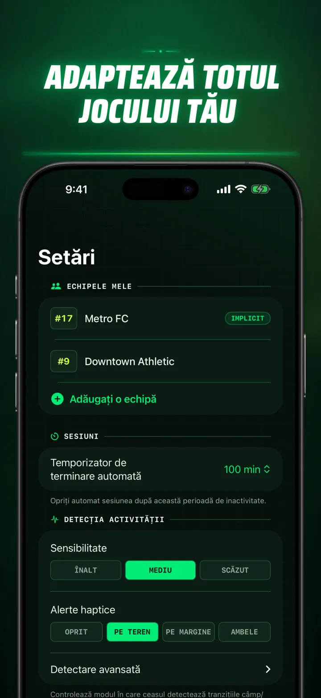
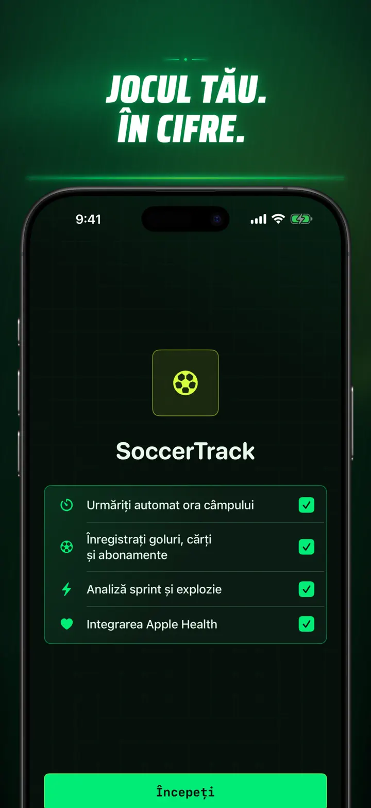

Soccer Time Track
Fotbal: timp de joc & analiză
Pornește o sesiune și joacă. Apple Watch separă automat timpul pe teren de cel pe bancă și înregistrează date live, sprinturi, evenimente și tendințe.
Descarcă din App Store
Despre aplicație
Privește-ți meciul altfel.
Soccer Time Track transformă Apple Watch într-un asistent de meci pentru jucătorii care vor să înțeleagă mai mult decât scorul final. Pornește de la încheietură, concentrează-te pe joc, apoi vezi pe iPhone o imagine detaliată a performanței tale.
TIMP AUTOMAT PE TEREN
Află când ai fost cu adevărat în joc. Semnalele de mișcare, antrenament și localizare ajută la diferențierea perioadelor de joc, activitate redusă și timp pe bancă. Primești:
- Timp pe teren și pe bancă
- Segmente de joc și o cronologie clară
- O analiză detaliată a întregii sesiuni
MECIUL, DIRECT DE LA ÎNCHEIETURĂ
Alege Meci, Antrenament, Amical sau Altul. În timpul jocului, înregistrează:
- Goluri marcate și primite
- Golurile și pasele tale decisive
- Cartonașe galbene și roșii
- Schimbări și marcaje de repriză
JOCUL TĂU, MĂSURAT
Treci dincolo de minute cu date precum:
- Distanță
- Viteză medie și maximă
- Sprinturi și accelerări de intensitate ridicată
- Puls și calorii active
- Cadență și accelerație
DATE LIVE, CONCENTRARE TOTALĂ
Un iPhone asociat poate afișa măsurătorile live în timp ce Apple Watch continuă antrenamentul. Tu rămâi concentrat pe meci, iar datele se adună în fundal.
URMĂREȘTE-ȚI PROGRESUL
Păstrează meciurile, antrenamentele, amicalele și alte sesiuni într-un singur istoric. Explorează tendințe și recorduri personale, compară performanțe și adaugă echipa, numărul de pe tricou, adversarul, locația și notițe pentru a păstra povestea fiecărui rezultat.
Ai nevoie de date în altă parte? Exportă sesiuni, segmente de joc și evenimente în format CSV sau JSON.
CREAT PENTRU APPLE WATCH ȘI APPLE HEALTH
Cu permisiunea ta, Soccer Time Track folosește date de antrenament, puls, mișcare și localizare pentru a crea analize și salvează antrenamentele de fotbal finalizate în Apple Health. Urmărirea automată necesită Apple Watch. Poți adăuga și manual o sesiune pe iPhone.
DATELE TALE, MECIUL TĂU
Sesiunile rămân pe dispozitivele tale și, când sincronizarea iCloud este activă, în baza ta de date privată iCloud. Soccer Time Track nu cere cont, nu afișează reclame și nu folosește analiză de la terți.
Nu mai ghici cât ai jucat. Vezi ce ai făcut cu timpul tău.
Politica de confidențialitate: https://masawata.net/SoccerTimeTrack/privacy-policy.html Termenii serviciului: https://www.apple.com/legal/internet-services/itunes/dev/stdeula/
Capturi de ecran









Soccer Time Track
Pornește o sesiune și joacă. Apple Watch separă automat timpul pe teren de cel pe bancă și înregistrează date live, sprinturi, evenimente și tendințe.
Descarcă din App Store